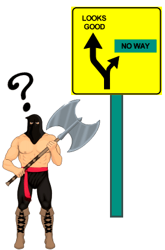
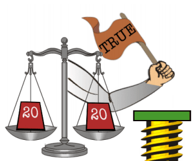

In this chapter we'll learn how to program the computer to make "decisions." This is the moment when you turn your computer into something more than an ordinary calculator.
Let's see how to write a simple decision-making statement in Forth. Imagine we are programming a mechanical egg-carton packer. Some sort of mechanical device has counted the eggs on the conveyor belt, and now we have the number of eggs on the stack. The Forth phrase:
12 = IF FILL-CARTON THENtests whether the number on the stack is equal to 12, and if it is, the word FILL-CARTON is executed. If it's not, execution moves right along to the words that follow THEN.
The word = takes two values of the stack and compares them to see if they are equal.
If the condition is true, IF allows the flow of execution to continue with the next word in the definition.
But if the condition is false, IF causes the flow of execution to skip to THEN, from which point execution will proceed.
Let's try it. Define this example word:
: ?FULL 12 = IF ." It's full " THEN ; ok 11 ?FULL ok 12 ?FULL It's full ok
Notice: an IF...THEN statement must be contained within a definition. You can't just enter these words in "calculator style."
Don't be misled by the traditional English meanings of the Forth words IF and THEN. The words that follow IF are executed if the condition is true. The words that follow THEN are always executed, as though you were telling the computer, "After you make the choice, then continue with the rest of the definition." (In this example, the only word after THEN is ;, which ends the definition.)
Let's look at another example. This definition checks whether the temperature of a laboratory boiler is too hot. It expects to find the temperature on the stack:
: ?TOO-HOT 220 > IF ." Danger -- reduce heat " THEN ;
If the temperature on the stack is greater than 220, the danger message will be printed at the terminal. You can execute this one yourself, by entering the definition, then typing in a value just before the word.
290 ?TOO-HOT Danger -- reduce heat ok 130 ?TOO-HOT ok
Remember that every IF needs a THEN to come home to. Both words must be in the same definition.
Here is a partial list of comparison operators that you can use before an IF...THEN
statement:
| = | |
| < | |
| > | |
| 0= | |
| 0< | |
| 0> |
The words < and > expect the same stack order as the arithmetic operators, that is:
| Infix | Postfix | |
|---|---|---|
| 2 < 10 | is equivalent to | 2 10 < |
| 17 > -39 | is equivalent to | 17 -39 > |
The words 0=, 0< and 0> expect only one value on the stack. The value is compared with zero.
Another word, INVERT, doesn't test any value at all; it simply reverses whatever condition has just been tested. For example, the phrase:
... = INVERT IF ...will execute the words after IF, if the two numbers on the stack are not equal.
Forth allows you to provide an alternative phrase in an IF statement, with the word ELSE.
The following example is a definition which tests whether a given number is a valid day of the month:
: ?DAY 32 < IF ." Looks good " ELSE ." no way " THEN ;

If the number on the stack is less than thirty-two, the message "Looks good" will be printed. Otherwise, "no way" will be printed.
Imagine that IF pulls a railroad-track switch, depending on the outcome of the test. Execution then takes one of two possible routes, but either way, the tracks rejoin at the word THEN.
By the way, in computer terminology, this whole business of rerouting the path of execution is
called "branching."
Here's a more useful example. You know that dividing any number by zero is impossible, so if you try it on a computer, you'll get an incorrect answer. We might define a word which only performs division if the denominator is not zero. The following definition expects stack items in this order:
( numerator denominator -- quotient ) : /CHECK DUP 0= IF ." invalid " DROP ELSE / THEN ;
Notice that we first have to DUP the denominator because the phrase
0= IFwill destroy it in the process.
Also notice that the word DROP removes the denominator if division won't be performed, so that whether we divide or not, the stack effect will be the same.
It's possible to put an IF...THEN (or IF...ELSE...THEN) statement inside another IF...THEN statement. In fact, you can get as complicated as you like, so long as every IF has one THEN.
Consider the following definition, which determines the size of commercial eggs (extra large, large, etc.) given their weight in ounces per dozen:
: EGGSIZE DUP 18 < IF ." reject " ELSE DUP 21 < IF ." small " ELSE DUP 24 < IF ." medium " ELSE DUP 27 < IF ." large " ELSE DUP 30 < IF ." extra large " ELSE ." error " THEN THEN THEN THEN THEN DROP ;
Once EGGSIZE has been entered, here are some results you'd get:
23 EGGSIZE medium ok 29 EGGSIZE extra large ok 40 EGGSIZE error ok
We'd like to point out a few things about EGGSIZE:
The entire definition is a series of "nested" IF...THEN statements. The word "nested" does not refer to the fact that we're dealing with eggs, but to the fact that the statements nest inside one another, like a set of mixing bowls.
The five THENs at the bottom close off the five IFs in reverse order, that is:
Also notice that a DROP is necessary at the end of the definition to get rid of the original value.
Finally, notice that the definition is visually organized to be read easily by human beings. Most Forth programmers would rather waste a little space than let things get any more confused than they have to be.
 How does the comparison operator (=, <, >, or whichever) let IF know whether the condition is true or false? By simply leaving TRUE or FALSE on the stack. A TRUE (all bits high) means that the condition is true; a FALSE (all bits low) means that the condition is false.
In computer jargon, when one piece of program leaves a value as a signal for another piece of program, that value is called a "flag."
Try entering the following phrases at the terminal, letting . show you what's on the stack as a flag.
5 4 > . -1 ok 5 4 < . 0 ok
(It's ok to use comparison operators directly at your terminal like this, but remember that an IF...THEN statement must be wholly contained within a definition because it involves branching.)
IF will take a TRUE as a flag that means true and a FALSE as a flag that means false. Now let's take a closer look at INVERT, which reverses the flag on the stack.
FALSE INVERT . -1 ok TRUE INVERT . 0 ok
Now we'll let you in on a little secret: IF will take any non-zero value to mean true.
To prove it, try entering this test:
: TEST IF ." non-" THEN ." zero " ;
Even though there is no comparison operator in the above definition, you'll still get
0 TEST zero ok 1 TEST non-zero ok -400 TEST non-zero ok
So what, you ask? Well, the fact that an arithmetic zero is identical to a flag that means "false" leads to some interesting results.
For one thing, if all you want to test is whether a number is zero, you don't need a comparison operator at all. For example, a slightly simpler version of /CHECK, which we saw earlier, could be
: /CHECK DUP IF / ELSE ." invalid " DROP THEN ;
Here's another interesting result. Say you want to test whether a number is an even multiple of ten, such as 10, 20, 30, 40 etc. You know that the phrase
10 MODdivides by ten and returns the remainder only. An even multiple of ten would produce a zero remainder, so the phrase
10 MOD 0=gives the appropriate "true" or "false" flag.
Still another interesting result is that you can use - (minus) as a comparison operator which tests whether two values are "not equal." When you subtract two equal numbers, you get zero (false); when you subtract two unequal numbers, you get a non-zero value. However, now we must talk a bit about "well-formed flags."
If you think about it, both 0= and INVERT do almost the same thing. However, 0= changes the number 0 to the number -1 and any non-zero number to 0, while INVERT changes all zero bits in a number to one bits and the one bits in that number to zero bits. Only when the number is a "well-formed flag", i.e., either 0 or -1, the result of 0= and INVERT is the same. All comparison operators return well-formed flags, fit for either 0= or INVERT. However, when you use - to compare two numbers, as we did above, the flag will not be well-formed when the two numbers differ in value, and only 0= can be used to safely reverse the meaning of the comparison.
A final result is described in the next section.
It's possible to take several flags from various tests and combine them into a single flag for one IF statement. You might combine them as an "either/or" decision, in which you make two comparison tests. If either or both of the tests are true, then the computer will execute something. If neither is true, it won't.
Here's a rather simple-minded example, just to show you what we mean. Say you want to print the name "ARTICHOKE" if an input number is either negative or a multiple of ten.
How do you do this in Forth? Consider the phrase:
DUP 0< SWAP 10 MOD 0= +Here's what happens when the input number is say, 30:
| Operator | Contents of stack | Operation |
|---|---|---|
| 30 | ||
| DUP | 30 30 | Duplicates it so we can test it twice. |
| 0< | 30 0 | Is it negative? No (zero). |
| SWAP | 0 30 | Swaps the flag with the number. |
| 10 MOD 0= | 0 -1 | Is it evenly divisible by 10? Yes (true). |
| + | -1 | Add the flags. |
Adds the flags? What happens when you add flags? Here are four possibilities:
Lo and behold, the result flag is true if either or both conditions are true. In this example, the result is -1, which means "true." If the input number had been -30, then both condition would have been true and the sum would have been minus two. Minus two is, of course, non-zero. So as far as IF is concerned, -2 is as true as -1.
Our simple-minded definition, then would be:
: VEGETABLE DUP 0< SWAP 10 MOD 0= + IF ." ARTICHOKE " THEN ;
Here is an improved version of a previous example called ?DAY.
The old ?DAY only caught entries over thirty-one. But negative numbers shouldn't be allowed either. How about this:
: ?DAY DUP 1 < SWAP 31 > + IF ." No way " ELSE ." Looks good " THEN ;
The above two examples will always work because any "true" flags will always be exactly "-1." In some cases, however, a flag may be any non-zero value, not just "-1," in which case it's dangerous to add them with +. For example:
1 -1 + . 0 okgives us a mathematically correct answer, but not the answer we want if 1 and -1 are flags.
For this reason, Forth supplies a word called OR, which will return the correct flag even in case of 1 and -1. An "or decision" is the computer term for the kind of flag we've been discussing. For example, if either the front door or the back door is open (or both), flies will come in.
Another kind of decision is called an "and" decision. In an "and" decision, both conditions must be true for the result to be true. For example, the front door and the back door must both be open for a breeze to come through. If there are three or more conditions, they must all be true.
For the Curious Newcomer
The use of words like "or" and "and" to structure part of an application is called "logic." A form of notation for logical statements was developed in the nineteenth century by George Boole; it is now called Boolean algebra. Thus the term "a Boolean flag" (or even just "a Boolean") simply refers to a flag that will be used in a logical statement.
How can we do this "and decision" in Forth? By using the handy word AND. Here's what AND would do with the four possible combinations of flags we saw earlier:
In other words, only the combination "-1 -1 AND" produces a result of "true." Let's say we're looking for a cardboard box that's big enough to fit a disk drive which measures:
height 6" width 19" length 22"
The height, width, and length requirements all must be satisfied for the box to be big enough. If we have the dimensions on the stack, then we can define:
: BOXTEST ( length width height -- ) 6 > ROT 22 > ROT 19 > AND AND IF ." Big enough " THEN ;
Notice that we've put a comment inside the definition, to remind us of stack effects. This is particularly wise when the stack order is potentially confusing or hard to remember.
You can test BOXTEST with the following phrase:
23 20 7 BOXTEST Big enough ok
As your applications become more sophisticated, you will be able to write statements in Forth that look like postfix English and are very easy to read. Just define the individual words within the definition to check some condition somewhere, then leave a flag on the stack.
An example is:
: SNAPSHOT LIGHT? FILM? AND IF PHOTOGRAPH THEN ;which checks that there is available light and that there is film in the camera before taking the picture. Another example, which might be used in a computer-dating application, is:
: MATCH HUMOROUS SENSITIVE AND ART.LOVING MUSIC.LOVING OR AND SMOKING 0= AND IF ." I have someone you should meet " THEN ;where words like HUMOROUS and SENSITIVE have been defined to check a record in a disk file that contains information on other applicants of the appropriate sex.
?DUP
The word ?DUP duplicates the top stack value only if it is non-zero. This can eliminate a few surplus words. For example, the definition:
: /CHECK DUP IF / ELSE DROP THEN ;can be shortened to
: /CHECK ?DUP IF / THEN ;
ABORT"
It may happen that somewhere in a complex application an error might occur (such as a division by zero), way down in one of the low-level words. When this happens you don't just want the computer to keep on going, and you also don't want it to leave anything on the stack.
If you think such an error might occur, you can use the word ABORT". ABORT" expects a flag on the stack: a "true" flag tells it to "abort," which in turn clears the stacks and returns execution to the terminal, waiting for someone to type something. ABORT" also prints the name of the last interpreted word, as well as whatever message you want.
Let's illustrate. We hope you're not sick of /CHECK by now, because here is yet another version:
: /CHECK DUP 0= ABORT" zero denominator " / ;
In this version, if the denominator is zero, any numbers that happen to be on the stack will be dropped and the terminal will show:
8 0 /CHECK Error -2 zero denominator ?
Just as an experiment, try putting /CHECK inside another definition:
: ENVELOPE /CHECK ." The answer is " . ;and try
8 4 ENVELOPE The answer is 2 ok 8 0 ENVELOPE Error -2 zero denominator ?
The point is that when /CHECK aborts, the rest of ENVELOPE is skipped.
A useful word to use in conjunction with ABORT" is ?STACK, which checks for stack underflow and returns a true flag if it finds it. Thus the phrase:
?STACK ABORT" stack empty "aborts if the stack has underflowed.
Forth uses the identical phrase, in fact. But it waits until all your definitions have stopped executing before it performs the ?STACK test, because checking continuously throughout execution would needlessly slow down the computer. You're free to insert a ?STACK ABORT" phrase at any critical or not-yet-tested portion of your application.
For Computer Philosophers
Forth provides certain error checking automatically. But because the Forth operating system is so easy to modify, users can readily control the amount of error checking their system will do. This flexibility lets users make their own tradeoffs between convenience and execution speed.
Here's a list of the Forth words we've covered in this chapter:
| IF xxx ELSE yyy THEN zzz | IF: ( f -- ) | If f is true (non-zero) executes xxx; otherwise executes yyy; continues execution with zzz regardless. The phrase ELSE yyy is optional. |
| = | ( n1 n2 -- f ) | Returns true if n1 and n2 are equal. |
| - | ( n1 n2 -- n-diff ) | Returns true (i.e., the non-zero difference) if n1 and n2 are not equal. |
| < | ( n1 n2 -- f ) | Returns true if n1 is less than n2. |
| > | ( n1 n2 -- f ) | Returns true if n1 is greater than n2. |
| 0= | ( n -- f ) | Returns true if n is zero (i.e., reverse the truth value). |
| 0< | ( n -- f ) | Returns true if n is negative. |
| 0> | ( n -- f ) | Returns true if n is positive. |
| AND | ( n1 n2 -- and ) | Returns the logical AND. |
| OR | ( n1 n2 -- or ) | Returns the logical OR. |
| ?DUP | ( n -- n n ) or ( 0 -- 0 ) | Duplicates only if n is non-zero. |
| ABORT" xx" | ( f -- ) | If the flag is true, types out an error message, followed by the text. Also clears the stacks and returns control to the terminal. If false, takes no action. |
| ?STACK | ( -- f ) | Returns true if a stack underflow condition has occurred. |
| | |
|---|---|
| Abort | as a general computer term, to abruptly cease execution if a condition occurs which the program is not designed to handle, in order to avoid producing nonsense or possibly doing damage. |
| "And" decision | two conditions that are combined such that if both of them are true, the result is true. |
| Branching | breaking the normally straightforward flow of execution, depending on conditions in effect at the time of execution. Branching allows the computer to respond differently to different conditions. |
| Comparison operator | in general, a command that compares one value with another (for example, determines whether one is greater than the other), and sets a flag accordingly, which normally will be checked by a conditional operator. In Forth, a comparison operator leaves the flag on the stack. |
| Flag | as a general computer term, a value stored in memory which serves as a signal as to whether some known condition is true or false. Once the "flag is set," any number of routines in various parts of a program may check (or reset) the flag, as necessary. |
| Logic | in computer terminology, the system of representing conditions in the form of "logical variables," which can be either true or false, and combining these variables using such "logical operators" as "and," "or," and "not," to form statements which may be true or false. |
| Nesting | placing a branching structure within an outer branching structure. |
| "Or" decision | two conditions that are combined such that if either one of them is true, the result is true. |
| | |

0= 0=leave on the stack when the argument is
-1?[answer]
0?
200?
ALCOHOLIC BEVERAGES PERMITTED or UNDER AGE[answer]
POSITIVE or ZERO or NEGATIVE[answer]
0 STARS * okUsing the word STARS, define a new version of STARS that corrects this problem. [answer]
( n lo-limit hi-limit -- )and leaves a "true" flag only if "n" is within the range
low-limit <= n < hi-limit[answer]
100 GUESS
The computer will either respond "TOO HIGH," "TOO LOW," or "CORRECT!" Write the definition of GUESS, making sure that the answer-number will stay on the stack through repeated guessing until the correct answer is guessed, after which the stack should be clear. [answer]
2 SPELLER two ok -4 SPELLER negative four ok 7 SPELLER OUT OF RANGE ok
Make it as short as possible. (Hint: The Forth word ABS gives the absolute value of a number on the stack.) [answer]
0 1000 TRAP BETWEEN ok 330 660 TRAP BETWEEN ok 440 550 TRAP NOT BETWEEN ok 330 440 TRAP BETWEEN okand so on, until the player guesses the answer:
391 391 TRAP YOU GOT IT! ok
Hint: you may have to modify the arguments to WITHIN so that TRAP does not say "BETWEEN" when only one of the arguments is equal to the hidden value. [answer]